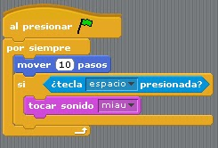

¿Alguna vez seguíste una receta de cocina paso a paso? ¿O las instrucciones para armar un mueble? Si lo hiciste, ya entendés la idea básica detrás de la programación. ¡Seguí leyendo y vas a ver por qué!
Contenido
¿Qué es un programa?
Un programa es un conjunto de instrucciones ordenadas que le decimos a una computadora para que realice una tarea. La computadora no piensa sola, necesita que alguien le explique exactamente qué hacer, paso a paso.
¿Qué es un algoritmo?
Un algoritmo es la secuencia ordenada de pasos para resolver un problema o realizar una tarea. Antes de programar, siempre existe un algoritmo, aunque no lo veamos escrito.
Un ejemplo de tu vida cotidiana:
Pensá en los pasos para lavarte los dientes:
- Agarrá el cepillo
- Poné pasta dental
- Abrí la canilla
- Cepillate durante dos minutos
- Enjuagá y cerrá la canilla
Eso es un algoritmo. Si saltás un paso o los hacés en orden incorrecto, el resultado no es el esperado. En programación pasa exactamente lo mismo.
¿Cómo se programa un robot?
En programación por bloques, cada instrucción es un bloque que se une a otro, como piezas de un rompecabezas. Vos decides el orden y el robot ejecuta exactamente lo que le indicaste.

Actividad 3 - Laboratorio de Manipulación
Acá viene la parte más divertida. Te presento un proyecto de Scratch ya armado. No tenés que crear nada desde cero - solo vas a tocar algunos números y ver qué pasa. Te explico exactamente cómo hacerlo.
Cómo explorar el proyecto de Scratch
Este es un proyecto que ya está armado y funcionando. Vas a ver un personaje y bloques de instrucciones apilados, como piezas que se van encastrando una debajo de la otra. Seguí estos pasos:
📍 Esta actividad la hacés directamente acá abajo, dentro de este material. No necesitás salir a ningún lado.
- Paso 1 - Ejecutá el proyecto tal cual está
Hacé clic en la bandera verde (arriba a la derecha del proyecto) y observá qué hace el personaje. - Paso 2 - Encontrá el bloque "mover"
Vas a ver un bloque que dice algo como "mover 10 pasos". Ese número (10) determina cuánto se mueve el personaje. - Paso 3 - Cambiá el número
Hacé clic sobre el número 10 dentro del bloque, borralo y escribí otro número, por ejemplo 50. Volvé a apretar la bandera verde y mirá qué diferencia hay. - Paso 4 - Probá con la dirección
Buscá un bloque que diga "girar" y cambiá también ese número. Ejecutá de nuevo. - Paso 5 - Reordená los bloques (opcional)
Si te animás, arrastrá un bloque a otra posición dentro de la pila y ejecutá para ver si cambia el resultado.
Lo que vas a descubrir:
- Que cada bloque tiene una función específica.
- Que el número dentro del bloque cambia el resultado de esa instrucción.
- Que el orden de los bloques también importa.
¿Viste cómo con solo cambiar un número el resultado fue completamente distinto? Eso es exactamente lo que hace un programador: prueba, observa y ajusta hasta lograr lo que necesita.
¡Llegamos al último desafío! Hasta acá aprendiste qué es un algoritmo y experimentaste con Scratch. Ahora vas a poner a prueba todo lo que sabés. Te presento un laberinto donde vas a tener que ordenar instrucciones para que un personaje llegue a su meta. ¿Estás listo?
Actividad 4 - Desafío del Laberinto
Último desafío. Esta vez vamos a salir un momento del MED para usar una herramienta especial, y después volvemos juntos. Te explico exactamente los pasos.
Cómo hacer esta actividad
- Paso 1 - Hacé clic en el botón "Ir al laberinto" que está más abajo. Se va a abrir una pestaña nueva en tu navegador - el MED va a seguir abierto en la pestaña de atrás.
- Paso 2 - En la pestaña nueva vas a ver un mapa con un personaje y una meta. Ordená los bloques de instrucciones y apretá Ejecutar para ver si tu personaje llega a destino. Podés repetirlo las veces que necesites.
- Paso 3 - Completá al menos los primeros 3 niveles.
- Paso 4 - Cuando termines, cerrá esa pestaña (o hacé clic en la X de arriba) y vas a volver automáticamente a esta página del MED, exactamente donde la dejaste.
📍 Tranquilo - no perdés tu lugar en el MED. Solo cerrás la pestaña nueva y seguís acá mismo.
¡Felicitaciones! Ya volviste al MED después de programar tu primer laberinto real. ¿Viste cómo tenías que pensar cada paso antes de ejecutarlo? Eso es exactamente lo que hace un programador todos los días.